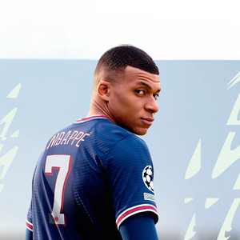

Fifa serilerinin en popüler soundtrackleri.
Atomic, BC...
Fifa
Fifa serilerinin en popüler soundtrackleri.
Atomic, BC...
| # | Sanatçı | Şarkı Adı | Süre |
|---|---|---|---|
| 1 | Andreya Triana | Beautiful People | 3:12 |
| 2 | Atomic Drum Assembly | Island Life | 3:45 |
| 3 | Bakar | Big Dreams | 3:25 |
| 4 | Bantu & Dr. Chaii | Jackie Chan | 3:30 |
| 5 | BC Unidos feat. U.S. Girls & Ledinsky | Take It Easy | 3:55 |
| 6 | Bearson feat. Lemaitre & Josh Pan | It's Not This | 3:40 |
| 7 | Billie Eilish | you should see me in a crown | 3:00 |
| 8 | Bob Moses | Heaven Only Knows | 4:10 |
| 9 | Broods | Peach | 3:50 |
| 10 | Bugzy Malone | Ordinary People | 3:45 |
| 11 | Childish Gambino | Feels Like Summer | 4:25 |
| 12 | Confidence Man | Out The Window | 3:30 |
| 13 | Courtney Barnett | City Looks Pretty | 4:15 |
| 14 | Crystal Fighters | Another Level | 3:55 |
| 15 | Death Cab For Cutie | Gold Rush | 4:00 |
| 16 | Easy Life | Pockets | 3:40 |
| 17 | Kojey Radical | Water with Mahalia & Swindle | 3:45 |
| 18 | LADAMA | Porro Maracatu (TOY SELECTAH Remix) | 4:05 |
| 19 | Lao Ra | Pa'lante | 3:50 |
| 20 | LSD (Labrinth, Sia, Diplo) | Genius Mansionair | 3:45 |
| 21 | Mansionair | Violet City | 4:15 |
| 22 | Jungle | Beat 54 (All Good Now) | 4:05 |
| 23 | Jacob Banks | Love Ain't Enough | 3:50 |
| 24 | Husky Loops feat. MEI & Count Counsellor | Everytime I Run | 3:45 |
| 25 | Peggy Gou | It Makes You Forget (Itgehane) | 4:00 |
| 26 | Sam Fender | Play God | 3:50 |
| 27 | Wovoka Gentle | 1000 Opera Singers Working In Starbucks | 3:55 |
| 28 | Ocean Wisdom | Tom & Jerry | 3:50 |
| 29 | Tom Misch | Good To Be Home feat. Loyle Carner, Barney Artist, Rebel Kleff | 4:00 |
| 30 | Tove Styrke | Sway | 3:45 |
| 31 | SUN SILVA | Blue Light | 4:00 |
| 32 | Odesza | Behind The Sun | 3:50 |
| 33 | Ibeyi, Pa Salieu | Made of Gold | 4:05 |
| 34 | Remi Wolf | Quiet On Set | 3:45 |
| 35 | The Knocks | Walking On Water (feat. Totally Enormous Extinct Dinosaurs) | 4:00 |